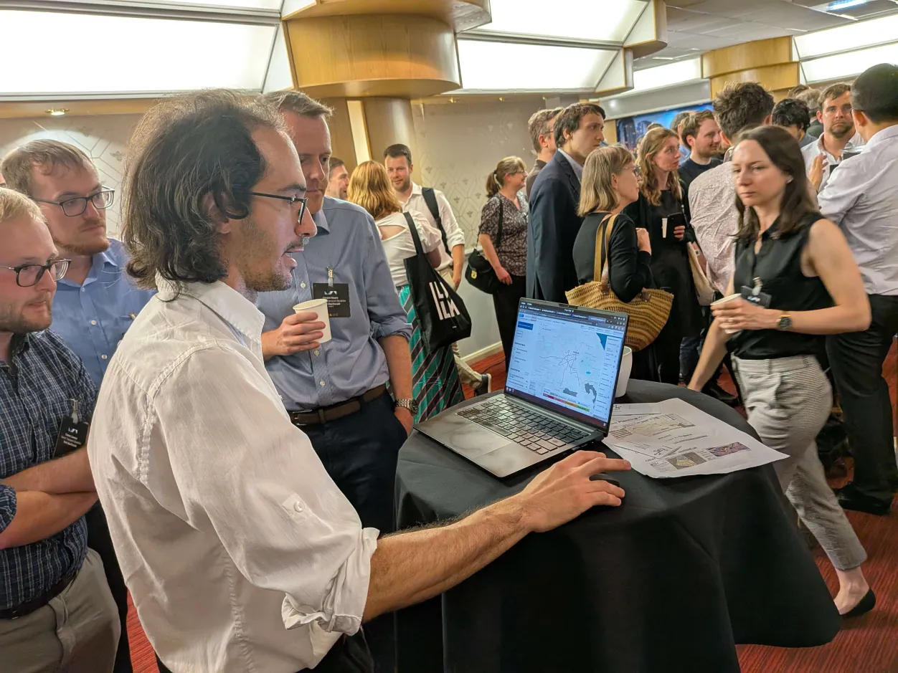

It's been a busy few weeks! First up was
Modelling World, where I had the chance to demo the
Network Planning Workspace. There were some
incredible talks about generating synthetic populations, building route choice
models for London cyclists, and using MATSim to study per-person exposure to
pollution. There was a theme of complex models needing to consider data
visualization and storytelling from the start.

Demonstrating NPW in a very loud room. Photo credit Robin Lovelace.
I also had a chance to properly wander around Manchester for the first time,
and really enjoy the public spaces in peak June weather.
The Bee Network branding was everywhere
Glasgow
Then it was off to Glasgow to attend the Scottish Transport Awards, where NPW
was highly commended in the transport planning category.
Sadly, the full NPW team couldn't make it.
I had a few day to explore Glasgow by bike, which really was the best way to get
around. The segregated infrastructure I sampled all felt awesome, and the canal
tow-paths were gorgeous. With a Sustrans colleague, I also cycled the
National Cycle Network 7
to Loch Lomond.
The NCN 7 never felt dull, constantly changing scenery.
For all of the time I spend behind a computer thinking about infrastructure
quality, it's always refreshing to experience some egregious pavement
parking firsthand.
Project updates
In between the travel, I've had enough time to continue improving the NPW and
LTN tool. NPW has mostly been performance work, like avoiding overhead between
Rust and JS that happens with Comlink's structured cloning for web workers.
The LTN tool has a few new features:
You can now easily compare a neighbourhood before and after your edits (details)
You can reclassify local/main roads by snapping a route, instead of
tediously tracing small lines (details)
More shortcuts are now detected correctly (details)
Finally, I've been experimenting with data in OpenStreetMap about crossings
and sidewalks mapped as parallel lines. There'll be much more to say about
that later, but I'm happy to report that an initial experiment to check
crossing frequency works fine in areas without detailed separate sidewalks.